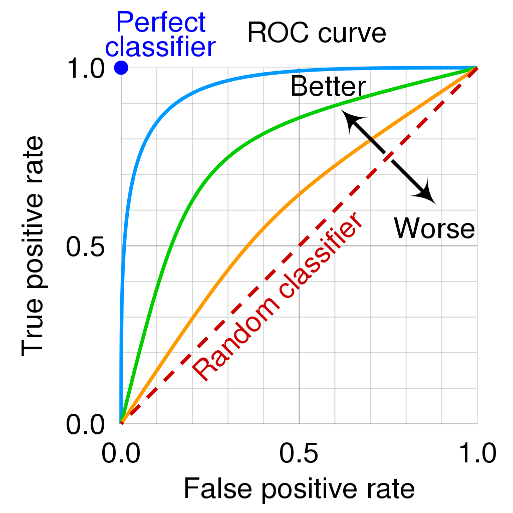
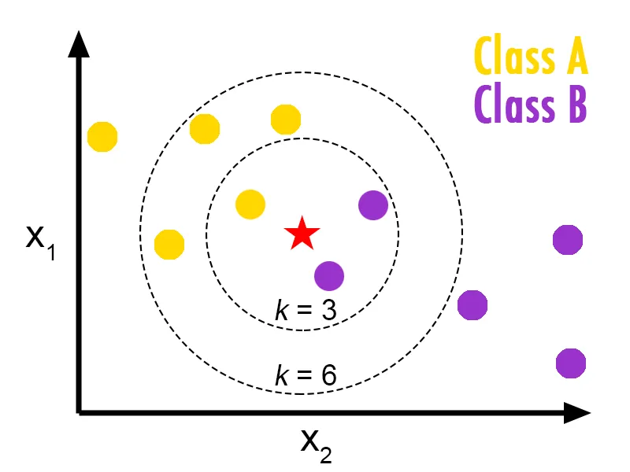

Machine Learning in der Produktion - Klassifizierung
Serafin Kollegger & Julian Huber

Klassifizierung
- Anstelle von numerischen Werten wird eine Klassifikation durchgeführt
- Meist wird eine Wahrscheinlichkeit für die Zugehörigkeit zu einer Klasse berechnet
- Häufig sind die Klassen binär
- z.B. \(f(X) = P(y=1|X)=1-P(y=0|X)\)
- Klassenzuordnung erfolgt durch einen Schwellenwert \(\theta\)
\[
\hat{y} = \begin{cases} 1 & \text{wenn } f(X) > \theta \\ 0 & \text{sonst} \end{cases}
\]
Fehlermaße

Confusion Matrix
\(\begin{array}{|c|c|c|} \hline & \text{Predicted: 0} & \text{Predicted: 1} \\ \hline \text{Actual: 0} & TN & FP \\ \hline \text{Actual: 1} & FN & TP \\ \hline \end{array}\)
- True Positive (\(\text{TP}\)): Die Instanz wurde korrekt als positiv (\(1\)) vorhergesagt
- True Negative (\(\text{TN}\)): Die Instanz wurde korrekt als negativ (\(0\)) vorhergesagt
- False Positive (\(\text{FP}\)): Die Instanz wurde fälschlicherweise als positiv (\(1\)) vorhergesagt
- False Negative (\(\text{FN}\)): Die Instanz wurde fälschlicherweise als negativ (\(0\)) vorhergesagt
Precision, Recall, F1-Score
- \(\text{Accuracy} = \frac{TP + TN}{TP + TN + FP + FN}\)
- Wie viele der vorhergesagten Instanzen sind korrekt?
- \(\text{Precision} = \frac{TP}{TP + FP}\)
- Wie viele der als positiv (\(1\)) vorhergesagten Instanzen sind tatsächlich positiv?
- \(\text{Recall} =\frac{TP}{TP + FN}\)
- Wie viele der tatsächlich positiven Instanzen wurden als positiv vorhergesagt?
- \(\text{F1-Score} = 2 \cdot \frac{Precision \cdot Recall}{Precision + Recall}\)

Unbalanced Classes
- Bei ungleich verteilten Klassen kann die \(\text{Accuracy}\) irreführend sein
\(\begin{array}{|c|c|c|} \hline & \text{Predicted: 0} & \text{Predicted: 1} \\ \hline \text{Actual: 0} & \text{TN}=900 & \text{FP}=100 \\ \hline \text{Actual: 1} & \text{FN}=10 & \text{TP}=10 \\ \hline \end{array}\)
-
Gegeben das Modell: \(\hat{y}=0\)
-
\(\text{Accuracy} = \frac{\text{TP} + \text{TN}}{\text{TP} + \text{TN} + \text{FP} + \text{FN}} = \frac{900 + 10}{900 + 100 + 10 + 10} = 0.91\)
- \(\text{Precision} = \frac{\text{TP}}{\text{TP} + \text{FP}} = \frac{10}{10 + 100} = 0.09\)
- \(\text{Recall} = \frac{\text{TP}}{\text{TP} + \text{FN}} = \frac{10}{10 + 10} = 0.5\)
Receiver Operating Characteristic (ROC) Curve
- Vergleicht die True Positive Rate (Recall) mit der False Positive Rate
- AUC (Area Under the Curve) gibt die Fläche unter der ROC-Kurve an
- Ein AUC von \(1\) bedeutet ein perfektes Modell, ein AUC von \(0.5\) bedeutet ein zufälliges Modell
- Die meisten Modelle geben eine Wahrscheinlichkeit für die Zugehörigkeit zu einer Klasse zurück
- Wenn die Wahrscheinlichkeit über einem Schwellenwert \(\theta\) liegt, wird die Instanz als positiv vorhergesagt
- Entsprechen kann man über den Schwellenwert die True Positive Rate und die False Positive Rate variieren und die ROC-Kurve erstellen

Beispiel verschiedene Schwellenwerte
- krank : Positiv
- gesund : Negativ
| \(\hat{f}(X)\) Wahrscheinkeit für krank | \(\theta\) Schwellenwert | \(\hat{y}\) Vorhersage | \(y\) Wahrheit | Gruppe |
|---|---|---|---|---|
| 0.9 | 0.8 | krank | krank | TP |
| 0.4 | 0.8 | gesund | gesund | TN |
| 0.6 | 0.8 | gesund | krank | FN |
| \(\hat{f}(X)\) Wahrscheinkeit für krank | \(\theta\) Schwellenwert | \(\hat{y}\) Vorhersage | \(y\) Wahrheit | Gruppe |
|---|---|---|---|---|
| 0.9 | 0.5 | krank | krank | TP |
| 0.4 | 0.5 | gesund | gesund | TN |
| 0.6 | 0.5 | krank | krank | TP |
Modelle
- Logistische Regression: Abwandlung der linearen Regression für Klassifikation
- kNearest Neighbors: Klassifiziert anhand der k nächsten Nachbarn
- Decision Trees: Organisiert die Daten in einem Baum und trifft Entscheidungen anhand von Regeln
Entscheidungsbäume / Decision Trees

- Jeder Knoten entspricht einer Entscheidung
- Jeder Blattknoten entspricht einer Klasse
- Der Baum wird anhand von Informations-Entropie oder Gini-Index erstellt
- Hyperparameter: Tiefe des Baumes, minimale Anzahl an Instanzen pro Blattknoten
- Erweiterungen: Random Forest, Gradient Boosting
Logistische Regression

\[f(X) = \frac{1}{1+e^{-\beta_0-\beta_1X_1-\beta_2X_2-\ldots-\beta_nX_n}}\]
- Transformation der linearen Regression in den Bereich \([0,1]\)
- mittels der Sigmoid-Funktion
- \(f(X)\) ist die Wahrscheinlichkeit für die Zugehörigkeit zu einer Klasse
kNearest Neighbors

- Klassifiziert anhand der k nächsten Nachbarn
- Hyperparameter: Anzahl der Nachbarn, Distanzmaß
Feature Engineering
- Bei vielen Algorithmen ist es wichtig, die Daten entsprechend aufzubereiten
- Dies ermöglicht ein schnelleres Training und bessere Ergebnisse
Normalisierung
| Observation | \(y\) | Klasse | Schnabellänge mm \(X_0\) | Schnabeltiefe in mm g \(X_1\) | Gewicht in kg \(X_2\) |
|---|---|---|---|---|---|
| 1 | 1 | Gentoo | 40 | 19 | 0.534 |
| 2 | 1 | Gentoo | 39 | 21 | 0.638 |
| 3 | 1 | Gentoo | 42 | 23 | 0.540 |
| 4 | 0 | Adélie | 20 | 18 | 0.453 |
| 5 | 0 | Adélie | 25 | 17 | 0.501 |
| 6 | \(?\) | \(?\) | 26 | 19 | 0.359 |
- Normalisierung einer Variable \(X\) bedeutet, alles zwischen \(0\) und \(1\) zu setzen.
\[X_n=\frac{X−X_{\text{min}}}{X_{\text{max}}−X_{\text{min}}}\]
- Standardisierung einer Variable \(X\) bedeutet, den Mittelwert (\(\mu\)) zu entfernen und durch die Abweichung (\(\sigma\)) zu teilen.
\[X_s=\frac{X−\mu}{\sigma}\]
\[\mu=\frac{1}{n}\sum_{j=1}^n x_j\]
\[\sigma=\sqrt{\frac{\sum_{j=1}^n (x_j-\mu)^2}{n-1}}\]
| Observation | \(y\) | Klasse | Schnabellänge mm \(X_0\) | Schnabeltiefe in mm \(X_1\) | Gewicht in kg \(X_2\) |
|---|---|---|---|---|---|
| 1 | 1 | Gentoo | 0.952 | 0.826 | 0.837 |
| 2 | 1 | Gentoo | 0.929 | 0.913 | 1.000 |
| 3 | 1 | Gentoo | 1.000 | 1.000 | 0.846 |
| 4 | 0 | Adélie | 0.476 | 0.783 | 0.710 |
| 5 | 0 | Adélie | 0.595 | 0.739 | 0.785 |
| 6 | ? | ? | 0.619 | 0.826 | 0.563 |
Dummy und One-Hot-Encoding
- Da nicht alle Modelle mit kategorischen Variablen (z.B. Gender) umgehen können, müssen diese umgewandelt werden
| Observation | \(y\) | Klasse | Schnabellänge mm \(X_0\) | Schnabeltiefe in mm \(X_1\) | Gewicht in kg \(X_2\) | Gender |
|---|---|---|---|---|---|---|
| 1 | 1 | Gentoo | 40 | 19 | 0.534 | Male |
| 2 | 1 | Gentoo | 39 | 21 | 0.638 | Female |
| 3 | 1 | Gentoo | 42 | 23 | 0.540 | Female |
| 4 | 0 | Adélie | 20 | 18 | 0.453 | Male |
| 5 | 0 | Adélie | 25 | 17 | 0.501 | Female |
| 6 | ? | ? | 26 | 19 | 0.359 | Male |
Dummy Encoding
| Observation | \(y\) | Schnabellänge mm \(X_0\) | Schnabeltiefe in mm \(X_1\) | Gewicht in kg \(X_2\) | Gender_Male |
|---|---|---|---|---|---|
| 1 | 1 | 40 | 19 | 0.534 | 1 |
| 2 | 1 | 39 | 21 | 0.638 | 0 |
| 3 | 1 | 42 | 23 | 0.540 | 0 |
| 4 | 0 | 20 | 18 | 0.453 | 1 |
| 5 | 0 | 25 | 17 | 0.501 | 0 |
| 6 | ? | 26 | 19 | 0.359 | 1 |
One-Hot-Encoding
| Observation | \(y\) | Schnabellänge mm \(X_0\) | Schnabeltiefe in mm \(X_1\) | Gewicht in kg \(X_2\) | Gender_Male | Gender_Female |
|---|---|---|---|---|---|---|
| 1 | 1 | 40 | 19 | 0.534 | 1 | 0 |
| 2 | 1 | 39 | 21 | 0.638 | 0 | 1 |
| 3 | 1 | 42 | 23 | 0.540 | 0 | 1 |
| 4 | 0 | 20 | 18 | 0.453 | 1 | 0 |
| 5 | 0 | 25 | 17 | 0.501 | 0 | 1 |
| 6 | ? | 26 | 19 | 0.359 | 1 | 0 |
Features aus Zeitreihen
- Zeitreihen können in verschiedene Features umgewandelt werden
- z.B. Lags, Mittelwert, Standardabweichung, Quantile, etc.
- Hierfür gibt es Bibliotheken wie TS Fresh und Prophet für Prognosen
| \(t\) Date | \(y_t\) Temperatur | \(y_{t-1}\) | \(\max(y_{t-1},y_{t-2},y_{t-3})\) |
|---|---|---|---|
| 2022-01-01 | 20 | 19 | 19 |
| 2022-01-02 | 21 | 20 | 20 |
| 2022-01-03 | 22 | 21 | 21 |
| 2022-01-04 | 23 | 22 | 22 |
| 2022-01-05 | 24 | 23 | 23 |
- Bei Zeitreihen werden häufig autorergressive Modelle verwendet, welche die Vorhersage aus den vorherigen Werten berechnen, z.B.:
- Auf diese Weise kann die Zahl an Datenpunkten reduziert werden
\[\hat{y_t} = f(y_{t-1},\max(y_{t-1},y_{t-2},y_{t-3}))\]
Transformation in Frequenzraum
- Bei einer Klassifikation von zeitabhängigen Daten kann es sinnvoll sein, die Daten in den Frequenzraum zu transformieren
- Hierfür gibt es verschiedene Methoden, z.B. die Fourier-Transformation
| \(y\) Vogel | \(X\) Wellenform | \(X_{\text{Fourier, 50Hz}}\) | \(X_{\text{Fourier, 100Hz}}\) | \(X_{\text{Fourier, 150Hz}}\) |
|---|---|---|---|---|
| Amsel | [123, 124, 125, 126, ...] |
0.1 |
0.2 |
0.3 |
| Rotkehlchen | [124, 123, 122, 121, ...] |
0.2 |
0.1 |
0.3 |
| Star | [125, 126, 127, 128, ...] |
0.3 |
0.2 |
0.1 |
🏆 Aufgabe 12.4 (20%): Klassifikationsmodell für defekte Flaschen
- Abgabeformalien: Fügen sie ein Kapitel in ihrer Dokumentation hinzu, in dem Sie die Ergebnisse der Klasisfikation mittels Confusion Matrix und unten gezeigter Tabelle dokumentieren
- Erstellen Sie ein Klassifikationsmodell zur Vorhersage von defekten Flaschen anhand der Daten aus der
Drop Vibration. Diese repräsentieren eine Zeitreihe der Vibrationen von Flaschen bei der Vereinzelung. - Erstellen Sie eine Tabelle, welche die genuzten Spalten für die Vorhersage enthält und den F1-Score für die jeweiligen Spalten
- Als Orientierung kann folgendes Notebook dienen 9_Classification_Python.ipynb, welches auch im nächsten Abschnitt vorgestellt wird
z.B.:
| Genutzte Features | Modell-Typ | F1-Score (Training) | F1-Score (Test) |
|---|---|---|---|
| \(\text{mean}()\) | kNN | ||
| \(\text{mean}(), y_{t-1}\) | Log. Regression | ||
| ... |